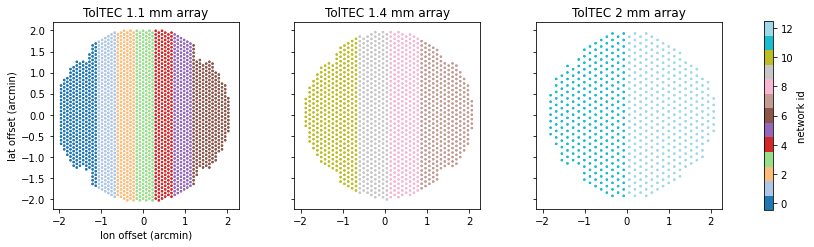
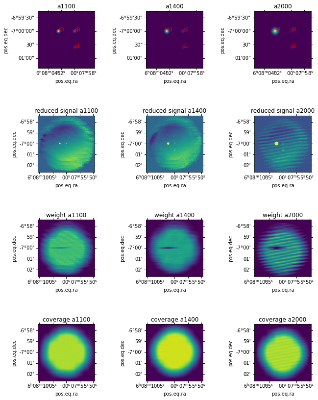

None
Work with the data reduction submodule¶
Authors¶
Zhiyuan Ma
Learning Goals¶
Learn the concept of
RuntimeContext, which is the primary interface to run data related tasks.Reduce an example TolTEC observation.
Keywords¶
Simulation; Data reduction
Summary¶
Note: The tolteca provides a commandline interface for running the simuator and reduction, which hides a lot of implementation details and is suitable for light users. This notebook aims to provide a in-depth overview of some of the key components behind the scene. The commandline interface tutorial can be found here: https://github.com/toltec-astro/tolteca/blob/main/docs/tolteca/toltec_simu_tutorial.md
In this tutorial, we will create a simulated TolTEC observation and reduce it.
To proceed, we need to first setup a tolteca working directory (workdir).
A tolteca workdir is a directory prepared by tolteca, which contains special subdirs recognized by the tolteca, as well as a set of runtime config files in YAML format.
Tolteca workdir provides the user experience similar to a python virutal
environment. User can create many workdirs and each has its own
configuration setup for a certain task or project. The configurations
are picked up automatically when invoking tolteca ... command in the
shell when in a particular tolteca workdir.
Under the hood, the in-memory representation of a workdir in tolteca is
an instance of tolteca.utils.RuntimeContext. All funtionalities
related to tolteca workdir are defined as some methods of this class (or
some subclass of it). The runtime context is the core object that user
would be dealing with in tolteca when working in the IPython prompt or
Jupyter notebook.
The first part of the tutorial gives a walk through of the concept of
runtime context and workdir. We will show how to setup from scratch a
workdir for running tolteca.simu module from Cell 1-7. Note that in the
tutorial, we create the workdir in a temporary folder, however, one is
encouraged to setup the workdir in his or her own user space, to match
the actual use case. The tolteca.cli module provides a command
tolteca setup to setup a workdir in the shell:
$ cd /path/to/hold/workdir
$ tolteca setup example_tolteca_workdir
$ cd example_tolteca_workdir && ls # check the content
50_setup.yaml bin/ cal/ log/
then one can just copy over one of the example configurations for the
simulator stored in
`tolteca/data/examples/ <https://github.com/toltec-astro/tolteca/tree/master/tolteca/data/examples>`__
to the workdir. Once the workdir is in place and has all the necessary
bits, on can jump right into the second part of the tutorial starting
Cell 8.
Installing Citlali¶
Citlali is the TolTEC data reduction pipeline engine, which needs to
be installed in order to run the part of this tutorial related to data
reduction (Cell 22). You’ll need to revise the path to the citlali
executable in Cell 22 to make it avaliable to tolteca.reduce. For
instruction of installing citlali, visit
https://github.com/toltec-astro/citlali.
Let’s first create a runtime context object.¶
To make the tutorial independent of any user’s own system setup, we just use a temporary directory here:
In[1]:
# import some common packages
import numpy as np
import matplotlib.pyplot as plt
%matplotlib inline
# %matplotlib widget
import astropy.units as u
import tempfile
from contextlib import ExitStack # to manage the tempdir
es = ExitStack()
workdir = es.enter_context(tempfile.TemporaryDirectory())
from tolteca.utils import RuntimeContext
rc = RuntimeContext.from_dir(dirpath=workdir, create=True)
print(f'Created runtime context {rc}')
print(f'Config files in the rc: {rc.config_files}')
Out[1]:
Created runtime context RuntimeContext(/private/var/folders/zc/33kgh8vx3z37kpp6xf84bzvm0000gn/T/tmp7zys6eqk)
Config files in the rc: [PosixPath('/private/var/folders/zc/33kgh8vx3z37kpp6xf84bzvm0000gn/T/tmp7zys6eqk/50_setup.yaml')]
To load the config, just access the config attribute:
In[2]:
print(f'config: {rc.config}')
Out[2]:
---------------------------------------------------------------------------
SchemaMissingKeyError Traceback (most recent call last)
<ipython-input-1-dde38748b755> in <module>
----> 1 print(f'config: {rc.config}')
/usr/local/Cellar/python@3.8/3.8.10/envs/tolteca/lib/python3.8/site-packages/cached_property.py in __get__(self, obj, cls)
34 return self._wrap_in_coroutine(obj)
35
---> 36 value = obj.__dict__[self.func.__name__] = self.func(obj)
37 return value
38
~/Codes/toltec/py/tolteca/tolteca/utils/__init__.py in config(self)
145 """
146 if self.is_persistent:
--> 147 cfg = self.collect_config_from_files(
148 self.config_files, validate=True
149 )
~/Codes/toltec/py/tollan/tollan/utils/dirconf.py in collect_config_from_files(cls, config_files, validate)
143 rupdate(cfg, c)
144 if validate:
--> 145 cfg = cls.validate_config(cfg)
146 return cfg
147
~/Codes/toltec/py/tollan/tollan/utils/dirconf.py in validate_config(cls, cfg)
148 @classmethod
149 def validate_config(cls, cfg):
--> 150 return cls.get_config_schema().validate(cfg)
151
152 @classmethod
/usr/local/Cellar/python@3.8/3.8.10/envs/tolteca/lib/python3.8/site-packages/schema.py in validate(self, data)
409 message = "Missing key%s: %s" % (_plural_s(missing_keys), s_missing_keys)
410 message = self._prepend_schema_name(message)
--> 411 raise SchemaMissingKeyError(message, e.format(data) if e else None)
412 if not self._ignore_extra_keys and (len(new) != len(data)):
413 wrong_keys = set(data.keys()) - set(new.keys())
SchemaMissingKeyError: Missing key: 'setup'
The reason of the exception is that we have not “setup” the runtime context properly. The setup step is to “initialize” the workdir, so later tolteca runs can recognize the context. To setup,
In[3]:
rc.setup()
from tollan.utils.fmt import pformat_yaml # pretty print the config
print(pformat_yaml(rc.config))
Out[3]:
runtime:
bindir: /private/var/folders/zc/33kgh8vx3z37kpp6xf84bzvm0000gn/T/tmp7zys6eqk/bin
caldir: /private/var/folders/zc/33kgh8vx3z37kpp6xf84bzvm0000gn/T/tmp7zys6eqk/cal
logdir: /private/var/folders/zc/33kgh8vx3z37kpp6xf84bzvm0000gn/T/tmp7zys6eqk/log
rootpath: /private/var/folders/zc/33kgh8vx3z37kpp6xf84bzvm0000gn/T/tmp7zys6eqk
setup_file: /private/var/folders/zc/33kgh8vx3z37kpp6xf84bzvm0000gn/T/tmp7zys6eqk/50_setup.yaml
setup:
created_at: 2021-06-19T03:18:35.102
version: 0.1.dev323+g1c6dc6b
The setup() method also support adding custom records as follows
(note the overwrite=True, otherwise the setup() will not be on
an already setup runtime context):
In[4]:
rc.setup(config={
'my_info': {'foo': 'bar'},
'setup': {'baz': 'boo'}
}, overwrite=True)
print(pformat_yaml(rc.config))
Out[4]:
my_info:
foo: bar
runtime:
bindir: /private/var/folders/zc/33kgh8vx3z37kpp6xf84bzvm0000gn/T/tmp7zys6eqk/bin
caldir: /private/var/folders/zc/33kgh8vx3z37kpp6xf84bzvm0000gn/T/tmp7zys6eqk/cal
logdir: /private/var/folders/zc/33kgh8vx3z37kpp6xf84bzvm0000gn/T/tmp7zys6eqk/log
rootpath: /private/var/folders/zc/33kgh8vx3z37kpp6xf84bzvm0000gn/T/tmp7zys6eqk
setup_file: /private/var/folders/zc/33kgh8vx3z37kpp6xf84bzvm0000gn/T/tmp7zys6eqk/50_setup.yaml
setup:
baz: boo
created_at: 2021-06-19T03:18:35.245
version: 0.1.dev323+g1c6dc6b
Now we have the workdir setup, we can go back and pretend that we already have a valid tolteca workdir, in which case we can just load the runtime context directly without needing to create and setup again (note how our custom records get loaded as well):
In[5]:
try:
del rc # just to make sure we don't get confused with the old rc object.
except Exception:
pass
rc = RuntimeContext(rootpath=workdir)
print(f'Created runtime context {rc}')
print(f'Config files in the rc: {rc.config_files}')
print(f'Config:\n{pformat_yaml(rc.config)}')
Out[5]:
Created runtime context RuntimeContext(/private/var/folders/zc/33kgh8vx3z37kpp6xf84bzvm0000gn/T/tmp7zys6eqk)
Config files in the rc: [PosixPath('/private/var/folders/zc/33kgh8vx3z37kpp6xf84bzvm0000gn/T/tmp7zys6eqk/50_setup.yaml')]
Config:
my_info:
foo: bar
runtime:
bindir: /private/var/folders/zc/33kgh8vx3z37kpp6xf84bzvm0000gn/T/tmp7zys6eqk/bin
caldir: /private/var/folders/zc/33kgh8vx3z37kpp6xf84bzvm0000gn/T/tmp7zys6eqk/cal
logdir: /private/var/folders/zc/33kgh8vx3z37kpp6xf84bzvm0000gn/T/tmp7zys6eqk/log
rootpath: /private/var/folders/zc/33kgh8vx3z37kpp6xf84bzvm0000gn/T/tmp7zys6eqk
setup_file: /private/var/folders/zc/33kgh8vx3z37kpp6xf84bzvm0000gn/T/tmp7zys6eqk/50_setup.yaml
setup:
baz: boo
created_at: 2021-06-19T03:18:35.245
version: 0.1.dev323+g1c6dc6b
Create simulated data¶
Tolteca.simu provides a set of tools to create simulated data. To run the simulator, we will need our workdir that we just setup, but with more information.
The tolteca.simu comes with its own subclass of RuntimeContext,
namely, SimulatorRuntime. The simulator runtime manages simulator
related configurations loaded from the workdir. To create the simulator
runtime, we do the follows:
In[6]:
from tolteca.simu import SimulatorRuntime
rc = SimulatorRuntime(rootpath=workdir)
print(f'Created runtime context {rc}')
print(f'Config files in the rc: {rc.config_files}')
print(f'Config:\n{pformat_yaml(rc.config)}')
Out[6]:
Created runtime context SimulatorRuntime(/private/var/folders/zc/33kgh8vx3z37kpp6xf84bzvm0000gn/T/tmp7zys6eqk)
Config files in the rc: [PosixPath('/private/var/folders/zc/33kgh8vx3z37kpp6xf84bzvm0000gn/T/tmp7zys6eqk/50_setup.yaml')]
---------------------------------------------------------------------------
SchemaMissingKeyError Traceback (most recent call last)
<ipython-input-1-add96175c9b1> in <module>
3 print(f'Created runtime context {rc}')
4 print(f'Config files in the rc: {rc.config_files}')
----> 5 print(f'Config:\n{pformat_yaml(rc.config)}')
/usr/local/Cellar/python@3.8/3.8.10/envs/tolteca/lib/python3.8/site-packages/cached_property.py in __get__(self, obj, cls)
34 return self._wrap_in_coroutine(obj)
35
---> 36 value = obj.__dict__[self.func.__name__] = self.func(obj)
37 return value
38
~/Codes/toltec/py/tolteca/tolteca/utils/__init__.py in config(self)
145 """
146 if self.is_persistent:
--> 147 cfg = self.collect_config_from_files(
148 self.config_files, validate=True
149 )
~/Codes/toltec/py/tollan/tollan/utils/dirconf.py in collect_config_from_files(cls, config_files, validate)
143 rupdate(cfg, c)
144 if validate:
--> 145 cfg = cls.validate_config(cfg)
146 return cfg
147
~/Codes/toltec/py/tollan/tollan/utils/dirconf.py in validate_config(cls, cfg)
148 @classmethod
149 def validate_config(cls, cfg):
--> 150 return cls.get_config_schema().validate(cfg)
151
152 @classmethod
/usr/local/Cellar/python@3.8/3.8.10/envs/tolteca/lib/python3.8/site-packages/schema.py in validate(self, data)
409 message = "Missing key%s: %s" % (_plural_s(missing_keys), s_missing_keys)
410 message = self._prepend_schema_name(message)
--> 411 raise SchemaMissingKeyError(message, e.format(data) if e else None)
412 if not self._ignore_extra_keys and (len(new) != len(data)):
413 wrong_keys = set(data.keys()) - set(new.keys())
SchemaMissingKeyError: Missing key: 'simu'
The reason of the exception is that we have not “setup” the simulator
properly. The simulator expects a branch of config entries under the key
simu, stored in one of the YAML files found in the workdir.
The tolteca.simu has a set of “built-in” configurations that one can use
readily, one of which is ‘toltec_point_source’. Let’s dump this config
to the workdir with file name “60_simu.yaml”. Note the format
\d+_.+.yaml, this is the convention of the YAML config files to be
recongnized by the tolteca runtime context. The files with lower number
are overriden by those with higher number.
Note that in the example config, it refers to a filepath
toltec_sources.asc in the sources list. This is an ASCII table
that defines the point sources to be injected on the sky. We need also
create this table.
In[7]:
from tolteca.simu import example_configs as cfgs
cfg = cfgs['toltec_point_source']
print(pformat_yaml(cfg))
import yaml
with open(rc.rootpath.joinpath('60_simu.yaml'), 'w') as fo:
yaml.dump(cfg, fo)
# create the point source catalog
# we just add two sources here. The column names
# used matches with those in the source definition `colname_map`, whose
# keys (a1100, etc) matches with the `grouping: array_name` setting.
from astropy.table import Table
catalog = Table(rows=[
['s0', 92., -7., 30., 20., 10.,],
['s1', 92., -7.01, 10., 10., 10.,],
['s3', 92.01, -7., 100, 200, 300],
],
names=['name', 'ra', 'dec', 'flux_a1100', 'flux_a1400', 'flux_a2000'],
units=[None, u.deg, u.deg, u.mJy, u.mJy, u.mJy]
)
catalog.write(rc.rootpath.joinpath('toltec_sources.asc'), format='ascii.ecsv')
Out[7]:
simu:
instrument:
calobj: cal/calobj_default/index.yaml
name: toltec
jobkey: toltec_point_source
mapping:
length: '1. arcmin'
n_scans: 40
ref_frame: icrs
rot: '0. deg'
space: '1.5 arcsec'
speed: '1. arcmin/s'
t0: 2020-04-12 00:00:00
t_turnover: '0.1 s'
target: '92d -7d'
type: tolteca.simu:SkyRasterScanModel
obs_params:
f_smp_data: '122. Hz'
f_smp_mapping: '12 Hz'
t_exp: '1 ct'
sources:
- colname_map:
a1100: flux_a1100
a1400: flux_a1400
a2000: flux_a2000
dec: dec
name: name
ra: ra
filepath: toltec_sources.asc
grouping: array_name
type: point_source_catalog
- atm_model_name: am_q50
type: toltec_array_loading
Now we re-visit the config attribute of the simulator runtime. We
should see the new 60_simu.yaml file is suceessfully picked up and no
more complains about missing configuration keys.
For those returning readers who already have a workdir setup with correct contents, you can start from this cell.
In[8]:
# If you already have a workdir at some path so you can ignore Cells 1-7 and jump in from here:
# from tolteca.simu import SimulatorRuntime
# workdir = '/the/path/to/a/workdir/with/simu/configs'
# rc = SimulatorRuntime(rootpath=workdir)
print(f'Config:\n{pformat_yaml(rc.config)}')
Out[8]:
Config:
my_info:
foo: bar
runtime:
bindir: /private/var/folders/zc/33kgh8vx3z37kpp6xf84bzvm0000gn/T/tmp7zys6eqk/bin
caldir: /private/var/folders/zc/33kgh8vx3z37kpp6xf84bzvm0000gn/T/tmp7zys6eqk/cal
logdir: /private/var/folders/zc/33kgh8vx3z37kpp6xf84bzvm0000gn/T/tmp7zys6eqk/log
rootpath: /private/var/folders/zc/33kgh8vx3z37kpp6xf84bzvm0000gn/T/tmp7zys6eqk
setup_file: /private/var/folders/zc/33kgh8vx3z37kpp6xf84bzvm0000gn/T/tmp7zys6eqk/50_setup.yaml
setup:
baz: boo
created_at: 2021-06-19T03:18:35.245
version: 0.1.dev323+g1c6dc6b
simu:
instrument:
calobj: cal/calobj_default/index.yaml
name: toltec
jobkey: toltec_point_source
mapping:
length: '1. arcmin'
n_scans: 40
ref_frame: icrs
rot: '0. deg'
space: '1.5 arcsec'
speed: '1. arcmin/s'
t0: 2020-04-12 00:00:00
t_turnover: '0.1 s'
target: '92d -7d'
type: tolteca.simu:SkyRasterScanModel
mapping_only: false
obs_params:
f_smp_data: 122.0 Hz
f_smp_mapping: 12.0 Hz
t_exp: 1.0 ct
perf_params:
anim_frame_rate: 12.0 Hz
chunk_size: 10.0 s
erfa_interp_len: 300.0 s
mapping_interp_len: 1.0 s
plot: false
save: false
sources:
- colname_map:
a1100: flux_a1100
a1400: flux_a1400
a2000: flux_a2000
dec: dec
name: name
ra: ra
filepath: toltec_sources.asc
grouping: array_name
type: point_source_catalog
- atm_model_name: am_q50
type: toltec_array_loading
The simulator configuration defines the on-the-fly mapping pattern, the input sources, and the instrument to simulate. Under the hood, each of these aspects is managed by its own class which implements the related functionalities.
Let’s take a look at the mapping model first. We can make a plot of the mapping pattern:
In[9]:
mapping = rc.get_mapping_model()
print(f'mapping model:\n{mapping}')
# the time to finish the mapping can be obtained from the mapping model
mapping_time = mapping.get_total_time()
print(f'time to finish mapping: {mapping_time}')
# to plot the pattern, let's genrate some sampling points
# For plotting, we just use a linspace grid here, but in the actual simulator run
# it makes use of the obs params "f_smp_mapping" as the sampling frequency
t = np.linspace(0, mapping_time, 1000)
mapping_offsets = mapping(t) # this is the offsets from bore sight
# to evaluate mapping pattern around a coordinates, use evaluate_at
# The frame of input coordinates will be assumed for the offsets
# here the mapping target from the config is given in equitorial
# so the mapping will be along equitorial coordinate frame
target_coord = mapping.target
print(f'mapping target: {mapping.target}')
mapping_coords = mapping.evaluate_at(target_coord, t)
fig = plt.figure(figsize=(10, 5))
fig.subplots_adjust(wspace=0.7)
# the bore sight offsets
ax = fig.add_subplot(1, 2, 1)
ax.set_aspect('equal')
ax.plot(
mapping_offsets[0].to_value(u.arcmin),
mapping_offsets[1].to_value(u.arcmin),
marker='.',
)
ax.plot(0, 0, marker='o', color='red') # the target
ax.set_xlabel('lon. offset (arcmin)')
ax.set_ylabel('lat. offset (arcmin)')
# the sky coords, which we need an fiducial wcs object
# to plot in the ref frame of target coords, i.e., ICRS
from astropy.wcs.utils import celestial_frame_to_wcs
w = celestial_frame_to_wcs(target_coord.frame)
# set the crval to target
w.wcs.crval = np.array([target_coord.ra.degree, target_coord.dec.degree])
ax = fig.add_subplot(1, 2, 2, projection=w) # a WCSAxes plot, see https://docs.astropy.org/en/stable/visualization/wcsaxes/index.html
ax.set_aspect('equal')
ax.plot(
mapping_coords.ra.degree,
mapping_coords.dec.degree,
transform=ax.get_transform('icrs'),
marker='.',
)
ax.plot(
target_coord.ra.degree, target_coord.dec.degree,
transform=ax.get_transform('icrs'),
marker='o', color='red',
)
ax.coords[0].set_ticklabel(exclude_overlapping=True) # reduce the cluttering of tick labels.
Out[9]:
mapping model:
Model: SkyRasterScanModel
Inputs: ('t',)
Outputs: ('lon', 'lat')
Model set size: 1
Parameters:
length space n_scans rot speed t_turnover
arcmin arcsec deg arcmin / s s
------ ------ ------- --- ---------- ----------
1.0 1.5 40.0 0.0 1.0 0.1
time to finish mapping: 43.9 s
mapping target: <SkyCoord (ICRS): (ra, dec) in deg
(92., -7.)>
WARNING: InputWarning: Coordinate string is being interpreted as an ICRS coordinate. [astroquery.utils.commons]

For the input sources, the sources list specified in the simulator
configs is parsed and a set of tolteca.simu.base.SourceModel
subclass instances are created according to the type key. In this
case, we only have one model with type point_source_catalog. It is
specified in format of an ASCII table, which we just created. Below is
the snippet that renders the input point sources to FITS image HDUs as
observed by the TolTEC instrument:
In[10]:
sources = rc.get_source_model()
print(f'sources: {sources}')
m_point_source = sources[0] # take out the point source model and let's take a look
print(f'model class is:\n{type(m_point_source)}')
print(f'model data:\n{m_point_source.data}')
print(f'model source positions: {m_point_source.pos}')
# we can make a synetic image and plot by creating a SourceImageModel from the SourceCatalogModel
# to do this we need some beammodels and a pixelscale.
# we can use the toltec beammodels here, and assume a 1"/pix scale
from tolteca.simu.toltec import BeamModel
m_img = m_point_source.make_image_model(beam_models=BeamModel().models, pixscale=1 << u.arcsec / u.pix)
# the m_img is a SourceImageModel class which contains image data as a dict of ImageHDU.
# we create a set of WCSAxes to plot them
from astropy.wcs import WCS
fig = plt.figure(figsize=(10, 5))
fig.subplots_adjust(wspace=0.9)
n_hdus = len(m_img.data)
for i, (k, hdu) in enumerate(m_img.data.items()):
w = WCS(hdu.header)
ax = fig.add_subplot(1, n_hdus, i + 1, projection=w)
ax.set_aspect('equal')
ax.set_title(f'{k}')
ax.imshow(hdu.data)
# label the sources
for p, n in zip(m_point_source.pos, m_point_source.data['name']):
ax.text(p.ra.degree, p.dec.degree, n, transform=ax.get_transform('icrs'), color='red')
Out[10]:
sources: [<SourceCatalogModel(name='/private/var/folders/zc/33kgh8vx3z37kpp6xf84bzvm0000gn/T/tmp7zys6eqk/toltec_sources.asc')>, {'a1100': <ArrayLoadingModel(name='a1100_loading')>, 'a1400': <ArrayLoadingModel(name='a1400_loading')>, 'a2000': <ArrayLoadingModel(name='a2000_loading')>}]
model class is:
<class 'tolteca.simu.base.SourceCatalogModel'>
Name: SourceCatalogModel
N_inputs: 2
N_outputs: 1
model data:
a1100 a1400 a2000 dec name ra
mJy mJy mJy deg deg
----- ----- ----- ----- ---- -----
30.0 20.0 10.0 -7.0 s0 92.0
10.0 10.0 10.0 -7.01 s1 92.0
100.0 200.0 300.0 -7.0 s3 92.01
model source positions: <SkyCoord (ICRS): (ra, dec) in deg
[(92. , -7. ), (92. , -7.01), (92.01, -7. )]>

The last piece of the simulator, namely, the instrument, ties the
mapping model and the source models together, and drives generating of
simulated data.
Under the hood, tolteca.simu.base.SimulatorBase defines the abstract
interface for implementing the simulator engine. Subclasses are
implemented to make simulated observations for different instruments.
We have specified instrument: toltec in the simulator config, which
instructs the simulator runtime context to create a
tolteca.simu.toltec.ToltecObsSimulator instance as the simulator
engine, which implements the actual methods for createing the simulated
observations.
We can inspect the simulator engine as follows:
In[11]:
simobj = rc.get_instrument_simulator()
print(f'simulator engine: {simobj}')
# one of the key attributes of the TolTEC simulator is the so called array property table,
# which stores all the detector properties as tabular data
apt = simobj.table
# print(pformat_yaml(apt.meta))
print(apt)
Out[11]:
simulator engine: <tolteca.simu.toltec.ToltecObsSimulator object at 0x121106ee0>
uid nw pg ... x_t y_t
... deg deg
---------- --- --- ... -------------------- ----------------------
00_0_169_0 0 0 ... -0.03249180330681757 -0.01154409322948823
00_0_169_1 0 0 ... -0.03249180330681757 -0.01154409322948823
00_1_170_0 0 1 ... -0.03249180330681757 -0.010101081575802202
00_1_170_1 0 1 ... -0.03249180330681757 -0.010101081575802202
00_0_163_0 0 0 ... -0.03249180330681757 -0.008658069922116172
00_0_163_1 0 0 ... -0.03249180330681757 -0.008658069922116172
00_1_159_0 0 1 ... -0.03249180330681757 -0.0072150582684301435
00_1_159_1 0 1 ... -0.03249180330681757 -0.0072150582684301435
00_0_155_0 0 0 ... -0.03249180330681757 -0.0057720466147441135
00_0_155_1 0 0 ... -0.03249180330681757 -0.0057720466147441135
... ... ... ... ... ...
12_0_156_0 12 0 ... -0.03445012806505416 0.0038567766016699306
12_0_156_1 12 0 ... -0.03445012806505416 0.0038567766016699306
12_1_154_0 12 1 ... -0.03445012806505416 0.0012855922005566422
12_1_154_1 12 1 ... -0.03445012806505416 0.0012855922005566422
12_0_155_0 12 0 ... -0.03445012806505416 -0.001285592200556646
12_0_155_1 12 0 ... -0.03445012806505416 -0.001285592200556646
12_1_155_0 12 1 ... -0.03445012806505416 -0.003856776601669935
12_1_155_1 12 1 ... -0.03445012806505416 -0.003856776601669935
12_0_158_0 12 0 ... -0.03445012806505416 -0.006427961002783224
12_0_158_1 12 0 ... -0.03445012806505416 -0.006427961002783224
Length = 7718 rows
In[12]:
# the columns x_t and y_t (`t` stands for toltec) stores the location of each
# detector on the focal plane, offseted from a fiducial center (co-axial for all three arrays)
# to plot the focal plane for each array.
apt_grps = apt.group_by('array_name').groups
n_arrays = len(apt_grps)
fig, axes = plt.subplots(1, n_arrays, figsize=(15, 4), sharex=True, sharey=True)
fig.subplots_adjust(wspace=0.3)
# color map kwargs
n_networks = 13
cm_kwargs = dict(
cmap=plt.cm.get_cmap('tab20', n_networks),
vmin=-0.5,
vmax=n_networks - 0.5
)
for (ax, (array_name, ), subapt) in zip(axes, apt_grps.keys, apt_grps):
ax.set_aspect('equal')
# color code by each detector "network" and toltec has 13 of them
im = ax.scatter(subapt['x_t'].to_value(u.arcmin), subapt['y_t'].to_value(u.arcmin), s=2, c=subapt['nw'], **cm_kwargs)
ax.set_title(apt.meta[array_name]['name_long'])
axes[0].set_xlabel('lon offset (arcmin)')
axes[0].set_ylabel('lat offset (arcmin)')
cb = fig.colorbar(im, ax=axes, location='right', shrink=0.87)
cb.set_label('network id')
Out[12]:
The default array property table also include a set of fiducial KIDs
model parameters. These KIDs model parameters are used to create the
KIDs resonator model as well as to simulate the readout circuit. These
aspects can be inspected via the kidssim and kids_readout_model
properties:
In[13]:
kidssim = simobj.kidssim
print(kidssim)
# plot the resonance circle by simulating a sweep
x, S21 = kidssim.sweep_x(n_steps=176, n_fwhms=10)
print(f'sweep data x shape: {x.shape} S21 shape: {S21.shape}')
# plot the first detectors
fig, axes = plt.subplots(1, 3, constrained_layout=True, figsize=(10, 5))
# f-S21 plane
ax = axes[0]
ax.plot(x[0], np.abs(S21[0]), marker='.')
ax.set_xlabel('detuning paramter x')
ax.set_ylabel('normalized S21')
# I-Q plane
ax = axes[1]
ax.set_aspect('equal')
ax.plot(S21[0].real, S21[0].imag, marker='.')
ax.set_xlabel('In-phase normalized')
ax.set_ylabel('Quatrature normalized')
# the kids readout model mix the normalized S21 with the readout circuit signatures.
# in the kids model we use here, this is just a gain factor but in the actual TolTEC readout
# system, the readout model is much more complicated
ax = axes[2]
ax.set_aspect('equal')
# note the readout model need additionally the actual readout frequencies as the inputs
# we compute f from the x values following the definition of x := f/fr - 1
S21_readout = simobj.kids_readout_model(S21, (x + 1) * kidssim.fr[:, np.newaxis])
# note on the plot below how the value range is different
ax.set_xlabel('In-phase with readout gain (adu)')
ax.set_ylabel('Quatrature with readout gain (adu)')
ax.plot(S21_readout[0].real, S21_readout[0].imag, marker='.')
Out[13]:
<kidsproc.kidsmodel.simulator.KidsSimulator object at 0x133a7d850>
sweep data x shape: (7718, 176) S21 shape: (7718, 176)
[<matplotlib.lines.Line2D at 0x1334ac2b0>]
The routine that puts all the pieces together are methods
mapping_context and probe_context. It does the actual compuation
for given source model and mapping pattern. Below we demonstrate some of
the internals of these methods:
In[14]:
with simobj.mapping_context(mapping=mapping, sources=sources) as mapping_evaluator:
# obs is a callable that takes time delta, and produces the time ordered data sampled from the sources
# with the mapping pattern
print(f'mapping evaluator: {mapping_evaluator}')
# for example, we can evaluate the time ordered data for the first 5 seconds, with some fiducial
# sampling rate 122Hz
f_smp = 100 << u.Hz
t = np.arange(0, 5, (1. / f_smp).to_value(u.s)) << u.s
s, obs_info = mapping_evaluator(t)
print(f'signal shape: {s.shape}, unit: {s.unit}')
print(f'obs_info keys: {obs_info.keys()}')
# we can plot some of the TODs on sky with the help of obs info
fig = plt.figure(figsize=(10, 10))
ax = fig.add_subplot(1, 1, 1, projection=w)
ax.imshow(m_img.data['a1100'].data) # plot the rendered source image in 1.1mm
# ax.set_aspect('equal')
ax.plot(
obs_info['obs_coords_icrs'].ra, obs_info['obs_coords_icrs'].dec,
transform=ax.get_transform('icrs'),
marker='x', label='bore sight')
# di=2474 is one of the detector that saw the sources
for di in [500, 1500, 2474, 3500]:
ax.plot(
obs_info['lon'][:, di], obs_info['lat'][:, di],
transform=ax.get_transform('icrs'),
marker='.', label=f'detector #{di}')
ax.legend()
Out[14]:
mapping evaluator: <function ToltecObsSimulator.mapping_context.<locals>.evaluate at 0x133254700>
signal shape: (7718, 500), unit: MJy / sr
obs_info keys: dict_keys(['t', 'time_obs', '_ref_frame', '_ref_coord', 'obs_coords', 'hold_flags', 'm_proj_icrs', 'm_proj_native', 'projected_frame', 'native_frame', 'obs_coords_icrs', '_altaz_frame', 'obs_coords_altaz', 'obs_parallactic_angle', 'a', 'm_rot_m3', 'x', 'y', 'lon', 'lat', 'az', 'alt', 's_additive', 's', 'm_source', 'mapping', 'ref_coord', 'ref_frame', 'self', 'sources', 't0', 'tbl', 'x_t', 'y_t'])
<matplotlib.legend.Legend at 0x1354f3820>
In[15]:
# the probe context returns the kidsdata evaluator, which
# takes the sky signal as input and produce readout timestream
with simobj.probe_context(fp=None) as kidsdata_evaluator:
r, x, S21, probe_info = kidsdata_evaluator(s)
print(f'S21 shape: {S21.shape} dtype: {S21.dtype}')
# It may be interesting to look at the PSD of the measured time streams
# note that we didn't include any noise so the PSDs will be zero
# for detector that didn't pass the point sources
from scipy import signal
psds = dict()
psd_f, psds['r'] = signal.welch(r, f_smp.to_value(u.Hz))
_, psds['x'] = signal.welch(x, f_smp.to_value(u.Hz))
_, psds['I'] = signal.welch(S21.real, f_smp.to_value(u.Hz))
_, psds['Q'] = signal.welch(S21.imag, f_smp.to_value(u.Hz))
fig, axes = plt.subplots(2, 2, sharex=True, figsize=(10, 5))
axes[-1, 0].set_xlabel('PSD Frequency (Hz)')
for ax, (label, psd) in zip(axes.ravel(), psds.items()):
ax.set_title(f'PSD {label}')
# di=2474 is one of the detector that saw the sources.
for di in [500, 1500, 2474, 3500]:
ax.plot(psd_f, psd[di], label=f'detector {di}')
axes[0, 0].legend()
Out[15]:
S21 shape: (7718, 500) dtype: complex128
<matplotlib.legend.Legend at 0x135ddbdf0>
To simulator an entire observation and save the data to data file,
tolteca.simu provides a convenient interface
SimulatorRuntime.run. The method implement the end-to-end work flow
that ties the mapping pattern, the source models, the instrument
simulator engine, as well as the data output module.
In[16]:
result = rc.run()
print(result)
Out[16]:
WARNING: InputWarning: Coordinate string is being interpreted as an ICRS coordinate. [astroquery.utils.commons]
SimulatorResult(_iterdata=<generator object SimulatorRuntime.run.<locals>.data_generator at 0x13333e270>, _lazy=True, config={'my_info': {'foo': 'bar'}, 'setup': {'baz': 'boo', 'created_at': '2021-06-19T03:18:35.245', 'version': '0.1.dev323+g1c6dc6b'}, 'simu': {'jobkey': 'toltec_point_source', 'sources': [{'filepath': 'toltec_sources.asc', 'grouping': 'array_name', 'type': 'point_source_catalog', 'colname_map': {'a1100': 'flux_a1100', 'a1400': 'flux_a1400', 'a2000': 'flux_a2000', 'dec': 'dec', 'name': 'name', 'ra': 'ra'}}, {'atm_model_name': 'am_q50', 'type': 'toltec_array_loading'}], 'instrument': {'calobj': 'cal/calobj_default/index.yaml', 'name': 'toltec'}, 'mapping': {'length': '1. arcmin', 'n_scans': 40, 'ref_frame': 'icrs', 'rot': '0. deg', 'space': '1.5 arcsec', 'speed': '1. arcmin/s', 't0': datetime.datetime(2020, 4, 12, 0, 0), 't_turnover': '0.1 s', 'target': '92d -7d', 'type': 'tolteca.simu:SkyRasterScanModel'}, 'obs_params': {'f_smp_data': <Quantity 122. Hz>, 'f_smp_mapping': <Quantity 12. Hz>, 't_exp': <Quantity 1. ct>}, 'mapping_only': False, 'perf_params': {'chunk_size': <Quantity 10. s>, 'mapping_interp_len': <Quantity 1. s>, 'erfa_interp_len': <Quantity 300. s>, 'anim_frame_rate': <Quantity 12. Hz>}, 'plot': False, 'save': False}, 'runtime': {'rootpath': PosixPath('/private/var/folders/zc/33kgh8vx3z37kpp6xf84bzvm0000gn/T/tmp7zys6eqk'), 'bindir': PosixPath('/private/var/folders/zc/33kgh8vx3z37kpp6xf84bzvm0000gn/T/tmp7zys6eqk/bin'), 'caldir': PosixPath('/private/var/folders/zc/33kgh8vx3z37kpp6xf84bzvm0000gn/T/tmp7zys6eqk/cal'), 'logdir': PosixPath('/private/var/folders/zc/33kgh8vx3z37kpp6xf84bzvm0000gn/T/tmp7zys6eqk/log'), 'setup_file': PosixPath('/private/var/folders/zc/33kgh8vx3z37kpp6xf84bzvm0000gn/T/tmp7zys6eqk/50_setup.yaml')}}, data_generator=<function SimulatorRuntime.run.<locals>.data_generator at 0x135e60d30>, mapping=<SkyRasterScanModel(length=1. arcmin, space=1.5 arcsec, n_scans=40. , rot=0. deg, speed=1. arcmin / s, t_turnover=0.1 s)>, obs_params={'f_smp_data': <Quantity 122. Hz>, 'f_smp_mapping': <Quantity 12. Hz>, 't_exp': <Quantity 1. ct>}, simctx=SimulatorRuntime(/private/var/folders/zc/33kgh8vx3z37kpp6xf84bzvm0000gn/T/tmp7zys6eqk), simobj=<tolteca.simu.toltec.ToltecObsSimulator object at 0x13328ff10>, sources=[<SourceCatalogModel(name='/private/var/folders/zc/33kgh8vx3z37kpp6xf84bzvm0000gn/T/tmp7zys6eqk/toltec_sources.asc')>, {'a1100': <ArrayLoadingModel(name='a1100_loading')>, 'a1400': <ArrayLoadingModel(name='a1400_loading')>, 'a2000': <ArrayLoadingModel(name='a2000_loading')>}])
The above line creates the tolteca.simu.SimulatorResult instance
which holds the result. The result can be marked as either lazy or
not. In the lazy case (our case, as indicated by the lazy
attribute), the actual simulation is run when the
SimulatorResult.save method is called, and the simulation will be
run in chunks, to allow simulating a lot of data that cannot be held in
the memory at once:
In[17]:
outdir = rc.get_or_create_output_dir()
result.save(outdir)
print(f'saved simulated data to {outdir}')
Out[17]:
WARNING: InputWarning: Coordinate string is being interpreted as an ICRS coordinate. [astroquery.utils.commons]
saved simulated data to /private/var/folders/zc/33kgh8vx3z37kpp6xf84bzvm0000gn/T/tmp7zys6eqk/toltec_point_source
The files created are listed as below. The apt_*.ecsv is the array
property table, and the toltec*_.nc are the raw KIDs data:
In[18]:
from tollan.utils.fmt import pformat_paths
print(pformat_paths(outdir.glob('*'), relative_to=outdir, sort=True))
Out[18]:
apt_000001_000_0000_2021_06_19_03_18_45.ecsv
simresult.state
tel_000001_000_0000_2021_06_19_03_18_45.nc
toltec0_000001_000_0000_2021_06_19_03_18_45_timestream.nc
toltec10_000001_000_0000_2021_06_19_03_18_45_timestream.nc
toltec11_000001_000_0000_2021_06_19_03_18_45_timestream.nc
toltec12_000001_000_0000_2021_06_19_03_18_45_timestream.nc
toltec1_000001_000_0000_2021_06_19_03_18_45_timestream.nc
toltec2_000001_000_0000_2021_06_19_03_18_45_timestream.nc
toltec3_000001_000_0000_2021_06_19_03_18_45_timestream.nc
toltec4_000001_000_0000_2021_06_19_03_18_45_timestream.nc
toltec5_000001_000_0000_2021_06_19_03_18_45_timestream.nc
toltec6_000001_000_0000_2021_06_19_03_18_45_timestream.nc
toltec7_000001_000_0000_2021_06_19_03_18_45_timestream.nc
toltec8_000001_000_0000_2021_06_19_03_18_45_timestream.nc
toltec9_000001_000_0000_2021_06_19_03_18_45_timestream.nc
tolteca.yaml
At this poin, we’ve done creating our simulated data. It is noted that the various inspection and plotting is for the educational purpose of the tutorial, exposing the under-the-hood machineries.
For doing the simulation in production, one just need to create a
SimulatorRuntime object, call the SimulatorRuntime.run method,
finally the SimulatorResult.save.
To make it even easier, the tolteca.cli module provides a command
line interface to invoke the simulator work flow:
$ cd some_tolteca_workdir
$ tolteca simu
Reduce the simulated observation¶
The data reduction is done by using the
tolteca.reduce.PipelineRuntime, a subclass of the
tolteca.utils.RuntimeContext object that we should now already be
familar with. To create the pipeline runtime,
In[19]:
from tolteca.reduce import PipelineRuntime
prc = PipelineRuntime(rootpath=workdir)
print(f'Created pipeline runtime {prc}')
print(f'Config files in the rc: {prc.config_files}')
print(f'Config:\n{pformat_yaml(prc.config)}')
Out[19]:
Created pipeline runtime PipelineRuntime(/private/var/folders/zc/33kgh8vx3z37kpp6xf84bzvm0000gn/T/tmp7zys6eqk)
Config files in the rc: [PosixPath('/private/var/folders/zc/33kgh8vx3z37kpp6xf84bzvm0000gn/T/tmp7zys6eqk/50_setup.yaml'), PosixPath('/private/var/folders/zc/33kgh8vx3z37kpp6xf84bzvm0000gn/T/tmp7zys6eqk/60_simu.yaml')]
---------------------------------------------------------------------------
SchemaMissingKeyError Traceback (most recent call last)
<ipython-input-1-6864aabdb620> in <module>
3 print(f'Created pipeline runtime {prc}')
4 print(f'Config files in the rc: {prc.config_files}')
----> 5 print(f'Config:\n{pformat_yaml(prc.config)}')
/usr/local/Cellar/python@3.8/3.8.10/envs/tolteca/lib/python3.8/site-packages/cached_property.py in __get__(self, obj, cls)
34 return self._wrap_in_coroutine(obj)
35
---> 36 value = obj.__dict__[self.func.__name__] = self.func(obj)
37 return value
38
~/Codes/toltec/py/tolteca/tolteca/utils/__init__.py in config(self)
145 """
146 if self.is_persistent:
--> 147 cfg = self.collect_config_from_files(
148 self.config_files, validate=True
149 )
~/Codes/toltec/py/tollan/tollan/utils/dirconf.py in collect_config_from_files(cls, config_files, validate)
143 rupdate(cfg, c)
144 if validate:
--> 145 cfg = cls.validate_config(cfg)
146 return cfg
147
~/Codes/toltec/py/tollan/tollan/utils/dirconf.py in validate_config(cls, cfg)
148 @classmethod
149 def validate_config(cls, cfg):
--> 150 return cls.get_config_schema().validate(cfg)
151
152 @classmethod
/usr/local/Cellar/python@3.8/3.8.10/envs/tolteca/lib/python3.8/site-packages/schema.py in validate(self, data)
409 message = "Missing key%s: %s" % (_plural_s(missing_keys), s_missing_keys)
410 message = self._prepend_schema_name(message)
--> 411 raise SchemaMissingKeyError(message, e.format(data) if e else None)
412 if not self._ignore_extra_keys and (len(new) != len(data)):
413 wrong_keys = set(data.keys()) - set(new.keys())
SchemaMissingKeyError: Missing key: 'reduce'
The reason of the exception is that we have not “setup” the pipeline
properly. The pipeline expects a branch of config entries under the key
reduce, stored in one of the YAML files found in the workdir.
The tolteca.reduce has a set of “built-in” configurations that one can
use readily, one of which is ‘toltec_point_source’. Let’s dump this
config to the workdir with file name “80_reduce.yaml”. Note the format
\d+_.+.yaml, this is the convention of the YAML config files to be
recongnized by the tolteca runtime context. The files with lower number
are overriden by those with higher number.
In[20]:
from tolteca.reduce import example_configs as cfgs
cfg = cfgs['toltec_citlali_simple']
# here we need to update the input path field to match the simu outdir
cfg['reduce']['inputs'][0]['path'] = rc.config['simu']['jobkey']
# and we set the jobkey to something more sensible
cfg['reduce']['jobkey'] = 'toltec_point_source_reduced'
print(pformat_yaml(cfg))
import yaml
with open(rc.rootpath.joinpath('80_reduce.yaml'), 'w') as fo:
yaml.dump(cfg, fo)
Out[20]:
reduce:
inputs:
- path: toltec_point_source
jobkey: toltec_point_source_reduced
pipeline:
config:
kids:
fitter:
modelspec: gainlintrend
weight_window:
fwhm_Hz: 1.5e4
type: lorentz
solver:
map:
grouping: array_name
mgrid0: 0.0
mgrid1: 0.0
offset: 0.0
pattern: Raster
pixelsize: 0.75
type: RaDec
runtime:
ncores: 1
policy: seq
tod:
despike:
despikewindow: 32
enabled: false
sigma: 8.0
timeconstant: 0.015
downsample:
downsamplefactor: 1
enabled: true
filter:
agibbs: 50.0
enabled: false
fhigh: 4.0
flow: 0.0
nterms: 32
kernel:
enabled: true
pcaclean:
approximateWeights: 0
cutStd: 0.0
enabled: false
grouping: array_name
neigToCut: 9
name: citlali
In[21]:
# now we are ready to load the pipeline runtime:
prc = PipelineRuntime(rootpath=workdir)
print(f'Created pipeline runtime {prc}')
print(f'Config files in the rc: {prc.config_files}')
print(f'Config:\n{pformat_yaml(prc.config)}')
Out[21]:
Created pipeline runtime PipelineRuntime(/private/var/folders/zc/33kgh8vx3z37kpp6xf84bzvm0000gn/T/tmp7zys6eqk)
Config files in the rc: [PosixPath('/private/var/folders/zc/33kgh8vx3z37kpp6xf84bzvm0000gn/T/tmp7zys6eqk/50_setup.yaml'), PosixPath('/private/var/folders/zc/33kgh8vx3z37kpp6xf84bzvm0000gn/T/tmp7zys6eqk/60_simu.yaml'), PosixPath('/private/var/folders/zc/33kgh8vx3z37kpp6xf84bzvm0000gn/T/tmp7zys6eqk/80_reduce.yaml')]
Config:
my_info:
foo: bar
reduce:
inputs:
- path: toltec_point_source
jobkey: toltec_point_source_reduced
pipeline:
config:
kids:
fitter:
modelspec: gainlintrend
weight_window:
fwhm_Hz: 1.5e4
type: lorentz
solver:
map:
grouping: array_name
mgrid0: 0.0
mgrid1: 0.0
offset: 0.0
pattern: Raster
pixelsize: 0.75
type: RaDec
runtime:
ncores: 1
policy: seq
tod:
despike:
despikewindow: 32
enabled: false
sigma: 8.0
timeconstant: 0.015
downsample:
downsamplefactor: 1
enabled: true
filter:
agibbs: 50.0
enabled: false
fhigh: 4.0
flow: 0.0
nterms: 32
kernel:
enabled: true
pcaclean:
approximateWeights: 0
cutStd: 0.0
enabled: false
grouping: array_name
neigToCut: 9
name: citlali
select:
runtime:
bindir: /private/var/folders/zc/33kgh8vx3z37kpp6xf84bzvm0000gn/T/tmp7zys6eqk/bin
caldir: /private/var/folders/zc/33kgh8vx3z37kpp6xf84bzvm0000gn/T/tmp7zys6eqk/cal
logdir: /private/var/folders/zc/33kgh8vx3z37kpp6xf84bzvm0000gn/T/tmp7zys6eqk/log
rootpath: /private/var/folders/zc/33kgh8vx3z37kpp6xf84bzvm0000gn/T/tmp7zys6eqk
setup_file: /private/var/folders/zc/33kgh8vx3z37kpp6xf84bzvm0000gn/T/tmp7zys6eqk/50_setup.yaml
setup:
baz: boo
created_at: 2021-06-19T03:18:35.245
version: 0.1.dev323+g1c6dc6b
simu:
instrument:
calobj: cal/calobj_default/index.yaml
name: toltec
jobkey: toltec_point_source
mapping:
length: '1. arcmin'
n_scans: 40
ref_frame: icrs
rot: '0. deg'
space: '1.5 arcsec'
speed: '1. arcmin/s'
t0: 2020-04-12 00:00:00
t_turnover: '0.1 s'
target: '92d -7d'
type: tolteca.simu:SkyRasterScanModel
obs_params:
f_smp_data: '122. Hz'
f_smp_mapping: '12 Hz'
t_exp: '1 ct'
sources:
- colname_map:
a1100: flux_a1100
a1400: flux_a1400
a2000: flux_a2000
dec: dec
name: name
ra: ra
filepath: toltec_sources.asc
grouping: array_name
type: point_source_catalog
- atm_model_name: am_q50
type: toltec_array_loading
The pipeline runtime handles the execution of the underlying pipeline
engine, which is specified to be citlali in our case. To proceed, we
need to make available the citlali executable to the tolteca. This can
be conveniently done with the helper function
RuntimeContext.link_to_bindir:
We can inspect the configurations and the engine itself as follows:
In[22]:
# In the environment this tutorial gets rendered, we the compiled citlali
# executable is in ~/Codes/toltec/cpp/citlali/build/bin
from pathlib import Path
citlali_exec = Path('~/Codes/toltec/cpp/citlali/build/bin/citlali').expanduser()
prc.symlink_to_bindir(citlali_exec, link_name='citlali')
Out[22]:
PosixPath('/private/var/folders/zc/33kgh8vx3z37kpp6xf84bzvm0000gn/T/tmp7zys6eqk/bin/citlali')
In[23]:
ppl_params = prc.get_pipeline_params()
print(pformat_yaml(ppl_params))
# we can inspect the engine version
engine = ppl_params['engine']
print(f'engine version: {engine.version}')
Out[23]:
config:
kids:
fitter:
modelspec: gainlintrend
weight_window:
fwhm_Hz: 1.5e4
type: lorentz
solver:
map:
grouping: array_name
mgrid0: 0.0
mgrid1: 0.0
offset: 0.0
pattern: Raster
pixelsize: 0.75
type: RaDec
runtime:
ncores: 1
policy: seq
tod:
despike:
despikewindow: 32
enabled: false
sigma: 8.0
timeconstant: 0.015
downsample:
downsamplefactor: 1
enabled: true
filter:
agibbs: 50.0
enabled: false
fhigh: 4.0
flow: 0.0
nterms: 32
kernel:
enabled: true
pcaclean:
approximateWeights: 0
cutStd: 0.0
enabled: false
grouping: array_name
neigToCut: 9
engine: Citlali(/private/var/folders/zc/33kgh8vx3z37kpp6xf84bzvm0000gn/T/tmp7zys6eqk/bin/citlali,version=cc27f77)
name: citlali
engine version: cc27f77
To run the pipelin, simply do:
In[24]:
result = prc.run()
Out[24]:
/usr/local/Cellar/python@3.8/3.8.10/Frameworks/Python.framework/Versions/3.8/lib/python3.8/subprocess.py:848: RuntimeWarning: line buffering (buffering=1) isn't supported in binary mode, the default buffer size will be used self.stdout = io.open(c2pread, 'rb', bufsize) ** logging ** configured with level=debug (debug at compile time; available levels: {trace, debug, info, warning, error, critical, off}) [2021-06-18 23:19:50.789] [info] [logging.h:129] timeit Citlali Process [2021-06-18 23:19:50.790] [info] [main.cpp:81] reconfigure logger to level=error
The files created are listed as below. The citlali.ecsv is the low
level config file supplied to the citlali call, and the
toltec*_.fits are the reduced maps.
In[25]:
outdir = result['outdir']
print(pformat_paths(outdir.glob('*'), relative_to=outdir, sort=True))
Out[25]:
citlali.yaml
toltec_simu_a1100_science_000001_451131.fits
toltec_simu_a1400_science_000001_451131.fits
toltec_simu_a2000_science_000001_451131.fits
We can now load back the reduced files and see the sources that we initialy put into the simulation.
In[26]:
from astropy.io import fits
from astropy.visualization import PercentileInterval, ImageNormalize, MinMaxInterval
interval = PercentileInterval(99)
fig = plt.figure(figsize=(10, 15))
fig.subplots_adjust(wspace=0.9)
n_hdus = len(m_img.data)
for i, (k, hdu) in enumerate(m_img.data.items()):
w = WCS(hdu.header)
ax = fig.add_subplot(4, n_hdus, i + 1, projection=w)
ax.set_aspect('equal')
ax.set_title(f'{k}')
ax.imshow(hdu.data)
# label the sources
for p, n in zip(m_point_source.pos, m_point_source.data['name']):
ax.text(p.ra.degree, p.dec.degree, n, transform=ax.get_transform('icrs'), color='red')
# load the output fits file and plot
hl = fits.open(list(outdir.glob(f'*_{k}_*.fits'))[-1])
for j, (e, label) in enumerate(zip([1, 2, 4], ['reduced signal', 'weight', 'coverage'])): # signal (1), weight (2), and int 4
hdu = hl[e]
w = WCS(hdu.header) # signal map is extension 1
ax = fig.add_subplot(4, n_hdus, n_hdus * (j + 1) + i + 1, projection=w)
ax.set_title(f'{label} {k}')
norm = ImageNormalize(hdu.data, interval=interval)
ax.imshow(hdu.data, norm=norm)
Out[26]:
The reduced fits images are not scaled for this current version. To compare the photometry, we would need to get the array property table generated along with the simulation.
In[27]:
# note the [0-9] in the glob pattern. this is to not select the _trimmed.ecsv file that are used internally
# by the tolteca.reduce and citlali
apt = Table.read(next(iter(rc.get_or_create_output_dir().glob('apt_000001_*[0-9].ecsv'))), format='ascii')
# print(apt['flxscale'])
# we can apply the flxscale to the signal images and try do the photometry
from photutils.psf import DAOGroup
from photutils.psf import (
IntegratedGaussianPRF,
BasicPSFPhotometry)
from photutils.background import MMMBackground
from astropy.modeling.fitting import LevMarLSQFitter
from astropy.stats import SigmaClip
from photutils.background import Background2D
from astropy.modeling.functional_models import GAUSSIAN_SIGMA_TO_FWHM
from photutils import CircularAperture
# %matplotlib widget
fig = plt.figure(figsize=(10, 10))
fig.subplots_adjust(wspace=0.9)
for i, k in enumerate(['a1100', 'a1400', 'a2000']):
scale = apt['flxscale'][apt['array_name'] == k][0] # in this version the flxscale is shared acorss each array so we just take first one.
print(f"flxscale for {k}: {scale:.4g}")
hl = fits.open(list(outdir.glob(f'*_{k}_*.fits'))[-1])
# hl.info()
hdu = hl[1] # signal
w = WCS(hdu.header) # used this to get xy from source position
ax = fig.add_subplot(3, 3, i + 1, projection=w)
ax.set_aspect('equal')
ax.set_title(f'{k}')
norm = ImageNormalize(hdu.data, interval=interval)
ax.imshow(hdu.data, norm=norm)
# we can find some of the array facts in the beam model
fwhm = BeamModel().models[k].x_fwhm
print(f'beam fwhm: {fwhm}')
pixscale = u.pixel_scale(w.proj_plane_pixel_scales()[0] / u.pix)
fwhm_pix = fwhm.to_value(u.pix, equivalencies=pixscale)
print(f'beam fwhm_pix: {fwhm_pix}')
# source catalog
x_src, y_src = w.all_world2pix(m_point_source.pos.ra.degree, m_point_source.pos.dec.degree, 0)
xy = Table(names=['x_0', 'y_0'], data=[x_src, y_src])
# print(xy)
# Plot an overlay on the source
apertures = CircularAperture(np.transpose((x_src, y_src)), r=fwhm_pix)
apertures.plot(axes=ax, color='#ff4400', lw=1.5, alpha=0.5)
# scale the data and do PSF photometry to check the recovered flux
# the scale will put data in MJy/sr and
# here we convert to mJy/beam, so the photometry will recover the flux in mJy
beam_area = 2 * np.pi * (fwhm / GAUSSIAN_SIGMA_TO_FWHM) ** 2
arcsec_per_pix = (1 << u.pix).to_value(u.arcsec, equivalencies=pixscale)
data = ((hdu.data * scale) << u.MJy / u.sr).to_value(u.mJy/u.arcsec ** 2) * arcsec_per_pix ** 2
# .to_value(u.mJy/u.beam, equivalencies=u.beam_angular_area(beam_area))
psf_model = IntegratedGaussianPRF(sigma=fwhm_pix / GAUSSIAN_SIGMA_TO_FWHM)
daogroup = DAOGroup(1.0) # 1 pix. this will not group the sources separated larger then 1 pix
mmm_bkg = MMMBackground()
fit_size = int(fwhm_pix * 3.) # fit box of 3 * fwhm
if fit_size % 2 == 0:
fit_size += 1
photometry = BasicPSFPhotometry(
group_maker=daogroup, bkg_estimator=mmm_bkg,
psf_model=psf_model,
fitter=LevMarLSQFitter(),
fitshape=(fit_size, fit_size))
# the bkg is not uniform, so try to get an approximation of it and subtract
sigma_clip = SigmaClip(sigma=3.)
bkg = Background2D(data, (30, 30), filter_size=(3, 3),
sigma_clip=sigma_clip, bkg_estimator=mmm_bkg)
ax = fig.add_subplot(3, 3, 3 + i + 1, projection=w)
ax.imshow(bkg.background)
ax.set_title(f'estimated bkg {k}')
catalog = photometry(
image=data - bkg.background,
init_guesses=xy)
# plot residual
ax = fig.add_subplot(3, 3, 6 + i + 1, projection=w)
ax.imshow(photometry.get_residual_image())
print(catalog[['id', 'x_0', 'y_0', 'flux_fit', 'flux_unc']])
ax.set_title(f'residual {k}')
Out[27]:
flxscale for a1100: 5.098e+08
beam fwhm: 5.0 arcsec
beam fwhm_pix: 6.666666666666678
id x_0 y_0 flux_fit flux_unc
--- ----------------- ------------------ ----------------- ------------------
1 208.0 208.99999999998315 31.54838450442993 1.3450173732788633
2 208.0 160.99999951253713 8.453958633859823 1.1748965151829007
3 160.3577842481555 208.9994933199453 93.68762562326465 1.2818049895678545
flxscale for a1400: 1.419e+08
beam fwhm: 6.363636363636363 arcsec
beam fwhm_pix: 8.484848484848499
id x_0 y_0 flux_fit flux_unc
--- ----------------- ------------------ ------------------ ------------------
1 208.0 208.99999999998315 17.065861259928255 0.8352588276693459
2 208.0 160.99999951253713 11.433398770062562 0.6275077158473168
3 160.3577842481555 208.9994933199453 193.9052877649744 0.8813505413240258
flxscale for a2000: 6.13e+07
beam fwhm: 9.09090909090909 arcsec
beam fwhm_pix: 12.121212121212139
id x_0 y_0 flux_fit flux_unc
--- ----------------- ------------------ ------------------ ------------------
1 208.0 208.99999999998315 17.513887582159672 0.8018449366080853
2 208.0 160.99999951253713 18.467919670129323 0.7143871584462086
3 160.3577842481555 208.9994933199453 296.3507151107419 0.8493761245612881
In[None]:
In[None]: